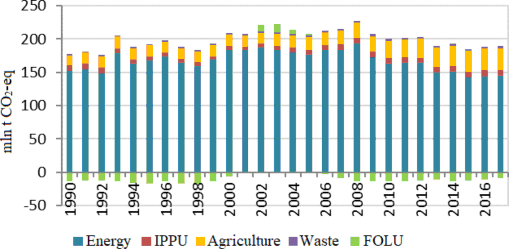

The Republic of Uzbekistan, being committed to the effective and transparent implementation of the Paris Agreement, guided by the Decisions of the Conference of the Parties to the Framework Convention on Climate Change 4/CMA.1, 1/CP.21, 9/CMA.1 and 18/CMA.1 and in accordance with current internal circumstances and capabilities, has updated its nationally determined contribution.
The Republic of Uzbekistan has increased its commitments in the updated natio nally determined contribution (NDC) and intends to reduce specific gree nhouse gas emissions per unit of GDP by 35% by 2030 from the level of 2010 instead of 10% specified in the NDC1.
The Republic of Uzbekistan hereby communicates its updated Nationally Determined Contribution and accompanying information to ensure clarity, transparency and understanding. This document is an updated version of the NDC. It provides information on national circumstances, mitigation and adaptation measures and actions that need to be taken to achieve this goal.
Uzbekistan joined the United Nations Framework Convention on Climate Change (UNFCCC) on June 20, 1993. Uzbekistan prepared and submitted three National Communications, the First Biennial Update Report (2021) and the Inventory Reports for 1990-2017 in accordance with the UNFCCC requirements and guidelines. The Fourth National Communication is currently being prepared.
Uzbekistan signed the Paris Agreement by providing the Intended Nationally Determined Contribution1 to the UNFCCC Secretariat on April 19, 2017.The country ratified the Paris Agreement on October 2, 2018 (Law of the Republic of Uzbekistan No. 491), and thus the INDC became the country’s First NDC (NDC1).
In accordance with the NDC1, in the long-term perspective until 2030, the Republic of Uzbekistan seeks to strengthen measures and actions to combat climate change in order to reduce by 2030 specific greenhouse gas emissions per unit of GDP by 10% from the level of 2010.
Decision 1/CP.21 requests to update national contributions by 2020 and every five years thereafter, in accordance with Article 4, paragraph 9, of the Paris Agreement.
Uzbekistan shares the view of the world community on the need to make every effort to prevent global climate change. Based on the capacity and responsibility and taking into account the country's transition to a resource-efficient "green" development model, which is based on decarbonization of the economy and the ongoing socio-economic reforms in the country, Uzbekistan has updated and strengthened its commitments (NDC) under the Paris Agreement for the period until 2030.
The updated NDC has been developed in accordance with the Decisions of the Conference of the Parties to the UNFCCC and the Paris Agreement 4/CMA.1, 1/CP.21, 9/CMA.1 and 18/CMA.1 by the Interagency Working Group under overall coordination of the Center of Hydrometeorological Service of the Republic of Uzbekistan and the support of the UN Development Program (UNDP) in Uzbekistan. Representatives of key ministries and agencies, academia and civil society, the private sector and youth took part in the development of the document.
The new goal of the Republic of Uzbekistan in terms of climate change mitigation, which seeks to be achieved by 2030, is hereby formulated as follows: reduce by 2030 specific greenhouse gas emissions per unit of GDP by 35% from the level of 2010.
The updated commitments (NDC) are aligned with the National Sustainable Development Goals (SDGs), as well as the socio-economic development goals in accordance with current national circumstances.
The updated NDC recognizes the important role of structural reforms in ensuring policy changes over the long run, prioritizing energy efficiency measures and the expansion of renewable energy sources, introduction of resource-saving technologies in key economic sectors and the social sphere, both economically and in terms of climate change mitigation and adaptation.
The updated NDC goal does not hinder the economic development of Uzbekistan, as it does not imply an absolute reduction of greenhouse gas emissions. Achievement of the long-term goal is envisaged with the support of international organizations and financial institutions, access to advanced resource-saving and environmentally friendly technologies, and climate finance resources.
The Adaptation section of the updated NDC document presents adaptation measures for agriculture and water management, social sector, ecosystems, strategic infrastructure and production systems, etc., as well as actions to mitigate the consequences of the Aral Sea disaster.
Uzbekistan is one of the most vulnerable countries in terms of climate change. Without additional measures resource conservation, the country may face shortage of water resources, increased desertification and land degradation, increase in the number of droughts and other dangerous phenomena, which will cause instability in agricultural production and pose a threat to the country's food security. Since the early 1950s, the average growth rate of air temperature throughout Uzbekistan has been 0.29°C every ten years, which is twice the rate of global warming.
In addition, Uzbekistan is facing one of the most acute problems for the Central Asian region – the environmental disaster of the Aral Sea, which is actually one of the largest environmental disasters in recent history.
Climate change has a global nature, as greenhouse gas emissions are evenly distributed in the atmosphere and respect no boundaries. Thus, only international cooperation can help stop the growth of greenhouse gas emissions and, ultimately, reduce the adverse effects of climate change. Uzbekistan has signed and is successfully fulfilling its obligations under the UNFCCC. Uzbekistan also welcomes the adoption of the new Global Climate Agreement.
Uzbekistan is a resource-rich developing economy with a stable annual GDP growth of over 5%. The country has about 35 million population. According to UN estimates, the country's population will reach 37 million by 2030.
The country has a significant potential in renewable energy sources, such as solar and wind, and can meet one’s growing energy needs and make a transition towards a green economy. The election of Shavkat Mirziyoyev as a new President in 2016 and the subsequent shift in strategic priorities have given a new dynamism to the country’s overall development. Since then, Uzbekistan has accelerated policy reforms towards a market system. Modernizing infrastructure and improving the provision of energy services, strengthening the institutional and market structure, and developing a favorable policy and regulatory framework in key sectors of the economy are major reform objectives for the country.
In the long term, structural reforms focusing on the development of basic sectors of industry, active investment policy to modernize and technologically upgrade production, social, automotive and communications infrastructure will play a key role in accelerating the pace of economic development.
Uzbekistan pursues a targeted policy aimed at mitigating climate change, and an energy-efficiency policy in key sectors of the economy plays a decisive role in this. The country has defined "Reducing the energy intensity of GDP by almost twofold through wide implementation of advanced energy-saving technologies" as one of its development targets for the period of up to 2030 in Uzbekistan.
Uzbekistan has approved and is now implementing a five-year development strategy, the Action Strategy on Five Priority Areas for Development of the Republic of Uzbekistan in 2017-20212. The Strategy provides for the reduction of energy and resource intensity of the economy, widespread introduction of energy-saving technologies in production, increased use of renewable energy sources, which will help reduce GHG emissions; adoption of measures to mitigate the adverse impact of global climate change and the drying up of the Aral Sea on agricultural development and livelihoods of the population.
In 2017, with the aim of addressing systemic problems, increasing the efficiency of public administration, as well as implementing the tasks identified in this Strategy, an administrative reform was initiated. The approved "Concept of Administrative Reform in the Republic of Uzbekistan"3 provides for "the creation of a strategic planning framework that enables generate future models of innovative development of priority areas and industries based on long-term scenarios for increasing the country’s intellectual and technological potential... ".
In accordance with the Paris Agreement, Uzbekistan, as a developing country, shall:
strive to formulate and communicate a long-term low greenhouse gas development strategy based on its own national circumstances;
develop and implement national adaptation plans;
take actions aimed at promoting innovation (technology development and transfer) and capacity building at all levels;
ensure reporting, including National Communications, biennial reports, etc., in accordance with certain requirements;
cooperate on loss and damage related to the adverse effects of climate change (early warning systems; emergency preparedness; risk assessment and management, etc.)
In order to ensure the implementation of commitments under the Paris Agreement, in 2019, Uzbekistan has identified priorities for the transition of the economy to a green development path and adopted the Strategy for Transition of the Republic of Uzbekistan to a Green Economy for 2019-2030 (Resolution of the President of the Republic of Uzbekistan PP-4477 dated 04.10.2019). Recently, the government has intensified efforts to promote the country's green agenda, together with development partners including UNDP, World Bank, FAO, ADB, and others. The country is implementing a national strategy for transition to a green economy through the development of a roadmap to 2030 and strives to achieve the following targets:
double the energy-efficiency indicator and reduce the carbon intensity of GDP;
further development of renewable energy sources to bring their share to 25% of the total power generation;
ensure access to modern, affordable and reliable energy supply for up to 100% of the population and sectors of the economy;
upgrade the infrastructure of industrial enterprises, ensure their sustainability by increasing energy efficiency by at least 20% and by wider use of clean and environmentally friendly technologies and industrial processes;
expand the production and use of motor fuels and vehicles with improved energy- efficiency and environmental performance, as well as develop electric transport;
significantly increase the water use efficiency in all sectors of the economy, introduce drip irrigation technologies on up to 1 million hectares of lands and increase yield of crops cultivated on this land by up to 20-40%;
achieve Land Degradation Neutrality;
increase the average productivity of basic agricultural products by 20-25%.
The Law "On the Use of Renewable Energy Sources" and the Law "On Public Private Partnership" adopted in 2019 in Uzbekistan create the legal and regulatory framework to accelerate the implementation of renewable energy projects. According to the country's long-term development plans, it plans to increase the share of RES-based power generation to least 25% by 2030. To achieve this target, it is planned to construct new RES facilities with a total capacity of 10 GW, including 5 GW of solar, 3 GW of wind and 1.9 GW of hydropower plants.4,5 The development of hydropower in the country follows the path of tapping the potential of small rivers, irrigation canals, reservoirs, and watercourses.
For the first time in its history, Uzbekistan launched solar power plant with a capacity of 100 MW, which will save up to 80 million cubic meters of natural gas annually and prevent about 160 thousand tons of greenhouse gas emissions.
Energy conservation measures will reduce the consumption of primary energy, mainly natural gas. Planned investments in energy efficiency and renewable energy sources have a high priority both economically (reducing energy production costs) and from a climate perspective (reducing greenhouse gas emissions).
Activities related to climate change mitigation and adaptation measures are reflected in almost all sectoral strategies, plans and the country's development programs, in particular: Innovative Development Strategy for 2019-2021, Solid Waste Management Strategy for 2019-2028, Agriculture Development Strategy for 2020-2030, Environmental Protection Concept-2030, Concept on Electricity Supply in 2020-2030, etc.
The country is successfully implementing measures to adapt and mitigate the climate change, particularly 15 projects of the Clean Development Mechanism projects under the Kyoto Protocol have been implemented. Over the entire period of CDM projects in Uzbekistan, 15.3 thousand tons of certified emission reductions in CO2 equivalent have been issued and foreign private investments in the amount of 24.4 million US dollars have been attracted.
Measures and actions aimed at saving energy resources have allowed Uzbekistan to stabilize the level of greenhouse gas emissions and reduce its contribution to global emissions. According to the GHG inventory, the growth in GHG emissions from 1990 to 2017 totaled around 7% only.
The gradual modernization of industries and a number of other measures implemented from 1990 to 2017 resulted in the reduction in the energy intensity of GDP by almost 2.5 times. Specific CO2 emissions per unit of GDP decreased by almost 40%.
Based on the above, the Republic of Uzbekistan has prepared and hereby communicates its updated NDC1 (hereinafter - NDC2). The updated NDC document consists of the following elements: (1) Mitigation component; (2) Adaptation component; (3) ways of NDC implementation.
|
1 |
Quantifiable baseline information |
|
|
(a) |
Baseline year |
Baseline year: 2010 |
|
(b) |
Quantifiable baseline indicators and their values |
Total Emissions Baseline NDC1: 190,6 Mt СО2-eq. (without removals) 199,0 Mt CO2-eq. (with removals) NDC2: 200,1 Mt CO2-eq. (without removals) 187,1 Mt CO2-eq. (with removals) 2017 NDC2: 189,2 Mt CO2-eq. (without removals) 180,6 Mt CO2-eq. (with removals). The noted difference in total GHG emissions estimates between NDC1 and NDC2 is due to:
The following are recommended in addition to the mitigation target indicator by 2030: Increase the share of renewable energy sources to 25% of total power generation; Double the energy-efficiency indicator relative to the level of 2018; Halve the energy intensity of GDP. These indicators are included in the National Development Goals, the Green Economy Strategy, the Climate Change Strategy, the Electric Power Development Concept. Baseline indicators: In 2019, the share of RES in the total power generation was 10%, mainly from hydropower, the energy intensity of the economy decreased by 44% (www.iea.org). |
|
(с) |
Target indicator versus benchmark indicator |
Taking into account national circumstances and the country's capacity, the Republic of Uzbekistan is committed to reducing specific greenhouse gas emissions per unit of GDP and by 2030 seeks to reduce this indicator by 35% from the level of 2010 instead of 10% provided for in NDC1. The favorable conditions for achieving the target indicator of reducing by 2030 the carbon intensity of the country's economy by 35% against 2010, which is outlined in the updated NDC2 of Uzbekistan, are as follows:
In addition, the updated NDC2 of Uzbekistan does not provide for an absolute reduction of greenhouse gas emissions for the period up to 2030, and aims only at certain containment of emission growth, which does not impede the country’s economic development. In fact, the implementation of the Nationally Determined Contribution (NDC2) is directly linked to the goals of the country's socio-economic development and depends on the extent to which the ambitious goals for low-carbon development and transition to a green economy, adopted in the country and integrated into government strategies/programs, are achieved. Achievement of the long-term goal is envisaged with the support of international organizations and financial institutions, gaining access to advanced energy-saving and environmentally friendly technologies, climate finance resources. Uzbekistan's funding needs to effectively mitigate and adapt to climate change remain significant. Thus, in compliance with Article 4.3 of the Paris Agreement, the NDC2 of the Republic of Uzbekistan reflects its highest possible ambitions and represents progress beyond the commitments made in the NDC1. |
|
(d) |
Data sources used in the benchmark quantitative assessment |
The main source of information is the Biennial Update Report of the Republic of Uzbekistan (2021). The calculation of the updated NDC2 target is based on the following:
|
|
(e) |
Circumstances under which Uzbekistan may update the indicator values |
The circumstances for updating the indicators may be related to the need to improve the quality of the national greenhouse gas inventory: refining activity data, using higher-level methodological approaches, updating the national emission factors, and expanding the coverage of emission sources. |
|
2 |
Implementation timeframe and/or periods |
|
|
(a) |
Implementation timeframe |
The commitment period is from January 1, 2020 to December 31, 2030. |
|
(b) |
Number of targets for one year or several years, as appropriate |
A single annual target indicator is set until 2030. |
|
3 |
Scope and coverage |
|
|
(a) |
General description of goal |
The goal is consistent with a relative reduction in specific greenhouse gas emissions per GDP across the economy compared to the baseline year emissions. |
|
(b) |
Gases and sectors covered |
Gases covered: carbon dioxide (CO2), methane (CH4), nitrous oxide (N2O), hydrofluorocarbons (HFCs). Sectors covered: Energy; Industrial Processes and Product Use (IPPU); Agriculture; Forestry and Other Land Use (AFOLU) and Waste. |
|
4 |
Planning processes |
|
|
(a) |
Planning processes under preparation of the Nationally Determined Contribution, implementation plans |
The NDC2 was developed under the guidance and supervision of the Center of Hydrometeorological Service (Uzhydromet) and supported by the United Nations Development Program (UNDP) in Uzbekistan, an Inter- Agency Working Group represented by key ministries and agencies, including:
Legal and regulatory framework: Law of the Republic of Uzbekistan "On Ratification of the Paris Agreement" (No.ZRU-491 dated 02.10.2018); Law of the Republic of Uzbekistan "On the Use of Renewable Energy Sources" (ZRU-539 dated 21.05.2019); Decree of the President of the Republic of Uzbekistan "On Approval of the Concept of Environmental Protection of the Republic of Uzbekistan until 2030" (UP-5863 dated 10.30.2019); Resolution of the President of the Republic of Uzbekistan "On Approval of the Strategy for Transition of the Republic of Uzbekistan to a Green Economy for 2019-2030" (PP-4477 dated 04.10.2019); Resolution of the Cabinet of Ministers of the Republic of Uzbekistan "On measures to Implement the National Goals and Targets in the Field of Sustainable Development until 2030" (PKM-841 dated 20.10.2018). UNFCCC guidelines "Information to Facilitate Clarity, Transparency and Understanding of the NDC (ICTU)" provided the methodological framework for the NDC update. The NDC2 was developed based on the analytical framework used to develop the First Biennial Update Report (BUR1) of the Republic of Uzbekistan to the UNFCCC (2021), and reflects the results of mitigation measures that were widely discussed with all national stakeholders. The experience accumulated during the development and approval of the NDC1 served as the main background for the development and promotion of the NDC2. Public consultations process to update the NDC was conducted in accordance with the country's rules and procedures, including civil society participation. The following national circumstances were taken into account in the planning process: The Republic of Uzbekistan is located in the central part of the Eurasian continent, within the Amudarya and Syrdarya river basins. The country borders with Kazakhstan, Kyrgyzstan, Tajikistan, Turkmenistan, and Afghanistan. The total border length is 6221 km. The total area of the Republic is 448.9 thousand km2. Uzbekistan is a landlocked country. Uzbekistan’s climate is sharply continental, with large seasonal and daily variations in air temperature, with hot and extended summer, relatively humid spring and unstable winter. The average annual air temperature in the plains currently (1990-2018) stands at 14.9°С, the warmest month is July (28.8°С), and the coldest month is January (0.9°С). However, the average monthly air temperature across the territory of Uzbekistan sharply varies. An increase in air temperature occurs with high natural variability, which causes significant inter-annual variations. Throughout Uzbekistan, the number of days with high air temperature is growing, for example, in 2019, the number of days with air temperature above 38°C at Tashkent station exceeded the norm by almost 2 times. Uzbekistan is the most populous country in Central Asia. The total population is about 35 mln people (as of the beginning of 2021). The urban population accounts for 50.5% of the total population, while the rural population accounts for 49.5%. The country has 30.3% of its population being under the working age, 59.5% of the population is at the working age and 10.2% of people are older than the working age. The average annual population growth totals 1.7%. The literacy rate of the adult population is 99.9% and that of the youth is 100%. Uzbekistan predominantly meets its needs through its own energy resources. At present, the available generating capacity of the country is 12.9 GW. The first 100 MW solar power plant was commissioned in 2021. In the future, it is planned to increase the share of RES-based power generation up to at least 25% by 2030. To this end, around 10 GW of new RES facilities are to be built, including 5 GW of solar, 3 GW of wind and 1.9 GW of hydroelectric power plants. The total greenhouse gas emissions in Uzbekistan (without CO2 removals in the forestry and other types of land use sector) in 2017 amounted to 189.2 Mt CO2-eq and 180.6 Mt CO2-eq – with removals. For the first time in the entire assessment period, since 1990, there has been a decrease in GHG emissions. The decrease in total GHG emissions is mainly due to the reduction in emissions in the energy sector, reduction of methane leaks in the oil and gas industry, including through the implementation of CDM projects. The observed decrease in GHG emissions in the last 7 years was primarily the result of a number of state and sectoral programs adopted and implemented in the country. Energy sector is the dominant sector of the inventory of GHG emissions in the country, accounting for 76.3% of the total GHG emissions (2017), followed by Agriculture sector - 17.8%, Industrial processes and product use - 4.5%, and Waste - 1.4%. Uzbekistan’s contribution to global emissions is around 0.3%. GHG emissions per capita, in general, total 5.8 t CO2-eq/person; including CO2 emissions – 3.1 t CO2-eq/person; methane emissions – 2.3 t CO2-eq/person; and nitrous oxide emissions – 0.44 t CO2-eq/person. In the last five years, there has been a decrease in specific GHG emissions per capita, which is due both to the absolute reduction of GHG emissions and consistently high growth rate of the population (1.6% per year in average). Implementation plans The NDC2 goals are to be achieved through the following:
In the future, the fulfillment of NDC commitments will be monitored in accordance with the documents under development: the National Adaptation Plan and Climate Change Strategy of the Republic of Uzbekistan, as well as the Biennial Transparency Report to the UNFCCC. Priority is also given to the development of a state system of inventory, reporting and control of greenhouse gas (GHG) emissions, which will contribute to: Improving the quality of GHG inventory and reducing the overall uncertainty of GHG inventory by developing and refining national emission factors, approaches and methods for calculating GHG emissions, and improving the quality of activity data. Improving the inventory system of greenhouse gas removals and emissions in the "Forestry and other types of land use" sector, including the use of advanced GIS technologies. |
|
(b) |
Institutional mechanisms |
|
|
(c) |
How the NDC preparation depends on the outcome of the Global Stocktake under Article 4, paragraph 9 of the Paris Agreement |
In accordance with Article 14.2 of the Paris Agreement, the Conference of the Parties serving as the Meeting of the Parties to the Agreement (CMA) will conduct its first global inventory in 2023 and every 5 years thereafter, unless the CMA decides otherwise. It is expected that Uzbekistan’s reduction commitments under the updated NDC2 will be taken into account in the Global Inventory Report to be published in 2023. |
|
(d) |
How economic and social impacts of response measures were taken into account in the development of the nationally determined contribution |
Uzbekistan's GDP growth between 1990 and 2017 was around 400% (in current dollars), while greenhouse gas emissions increased by only 6.7% over the same period. Thus, the GDP growth significantly outpaces the growth in greenhouse gas emissions. Achieving the set target ensures that the growth of greenhouse gas emissions remains contained as the economy develops. The country's intention to increase its ambitions on limiting the growth of greenhouse gas emissions by reducing specific GHG emissions per unit of GDP by 35% (NDC2) instead of 10% (NDC1) by 2030 from the level of 2010 will not create obstacles for socio-economic development of the country, and is consistent with the overall policy goals of improving energy efficiency, reducing resource consumption by the economy and increasing the share of RES in the country's energy balance, as well as the goals of rational use and sustainable development (SDG). In the future, this will allow the Republic of Uzbekistan, along with other Parties to the UNFCCC, achieve the long-term global goal of preventing the average global air temperature from rising by more than 2⁰C. |
|
5 |
Assumptions and methodological approaches, including for estimating and accounting for anthropogenic greenhouse gas emissions and their removal, where appropriate |
|
|
(a) |
Assumptions and methodological approaches in accordance with paragraph 31 of Decision 1/CP.21 and the accounting guidelines adopted by the COP |
Accounting approach for emissions in the IPPU sector: The Republic of Uzbekistan does not include in the estimate of emissions of HFCs, PFCs, sulfur hexafluoride and nitrogen fluoride in the NDC2, since the contribution of HFCs accounts for only 0.2% of total GHG emissions, and statistical reporting has not yet been developed to estimate emissions of other gases. The Republic of Uzbekistan will continue to improve the reporting on greenhouse gases in the IPPU sector and expects to expand the range of calculation categories. Approach to accounting for emissions in the FOLU sector: Availing the flexibility mechanisms of the Paris Agreement, the Republic of Uzbekistan will not include the FOLU sector in the updated NDC2, since the available activity data is not complete, not all carbon pools are included in the emission/removal estimates, many assumptions are used to estimate emissions, and it is extremely difficult to track fulfillment of commitments on increasing removals. The Republic of Uzbekistan can also remove emissions caused by natural perturbations in accordance with the available IPCC guidelines. The Republic of Uzbekistan will continue and improve the reporting of greenhouse gases in the AFOLU sector, which will require updating its methodologies. |
|
(b) |
IPCC methodologies and indicators used to estimate anthropogenic emissions and removals of greenhouse gases |
Emission estimation methodologies: 2006 IPCC Guidelines. Indicators applied: The Republic of Uzbekistan intends to apply the 100- year values of the global warming potential (GWP) of the IPCC Fourth Assessment Report to calculate and present the final CO2 equivalent values. |
|
Transparency |
Transparency in mitigation and adaptation will be ensured through:
|
|
|
6 |
Why a Party considers its Nationally Determined Contribution to be fair and ambitious in light of its national circumstances |
|
|
(a) |
Why Uzbekistan considers its Nationally Determined Contribution to be fair and ambitious in light of national circumstances |
Uzbekistan’s NDC2 goal in terms of reducing specific greenhouse gas emissions per unit of GDP has been significantly strengthened compared to the previously defined NDC1 goal (more than 3 times). The goal is adopted in accordance with the latest GHG inventory data and does not impede the country’s socio-economic development. In the future, this will allow the Republic of Uzbekistan, along with other Parties to the UNFCCC, achieve a long-term global goal - prevent increase in the average global air temperature by more than 2oC. Currently, Uzbekistan’s GHG emissions share in global emissions accounts for about 0.3%. GHG emissions per capita total 5.8 t CO2-eq/person (2017). Since 1990, they decreased by 2.8 t CO2-eq/person. High population growth rate and industrial development, including in construction, textile, automotive industry and agriculture require the development of the energy sector. In addition, further aridization of the climate will require additional energy consumption for cooling. In this regard, until 2030, despite the reduction of GHG emissions due to rapid development of RES, according to our estimates, GHG emissions will increase, although insignificantly. Nevertheless, Uzbekistan strives and develops appropriate programs and strategies in order to reduce the intensity of emission growth. Uzbekistan’s economic growth is to be ensured on the basis of "green" and low-carbon development, which will contribute to the global goal of the Convention and the Paris Agreement in accordance with the country's capacity and national circumstances. |
|
(b) |
How Uzbekistan complies with paragraph 3 of Article 4 of the Paris Agreement |
The updated and strengthened Nationally Determined Contribution of the Republic of Uzbekistan represents progress over previously reported Nationally Determined Contribution, as trends in containing the growth rate of specific GHG emissions increase from 10% in 2010 to 35% by 2030. |
|
(c) |
What was Uzbekistan’s reaction to paragraph 4 of Article 4 of the Paris Agreement |
The Republic of Uzbekistan will continue strengthening its efforts to mitigate climate change, and over time, will move toward economy-wide absolute emission reduction or limitation targets based on national circumstances. |
|
(d) |
How the Nationally Determined Contributions contribute to the objective of the Convention as set forth in its Article 2 |
The Republic of Uzbekistan undertakes to reduce specific greenhouse gas emissions per unit of GDP by 35% from the level of 2010 by 2030, in accordance with national circumstances and capacity, thereby contributing to stabilizing the global concentration of greenhouse gases in the atmosphere at a level that prevents dangerous anthropogenic interference with the climate system. |
GHG emissions trends for the period 1990-2017. Inventory and assessment results of greenhouse gas emissions make up the basis for both assessing the progress in terms of NDC implementation, and determining the mitigation potential and future GHG emission estimates and, ultimately, updating the country's commitments under the Paris Agreement.
The current inventory covers the period from 1990 to 2017. The key difference between this and previous inventories is that it has been developed using modern IPCC methodologies. Shift to the new methodologies has led to the need to recalculate and refine previous GHG emission estimates for the period 1990-2012. Consequently, the emission estimates obtained in the current inventory slightly differ from the previous estimates.
The greenhouse gas inventory covers five sectors: Energy, Industrial Processes and Product Use (IPPU), Agriculture, Forestry and Other Land Use (FOLU) and Waste. The 2006 IPCC Guidelines for National Greenhouse Gas Inventories make up the methodological framework for conducting the inventory.
The main estimated GHGs are carbon dioxide (CO2), whose global warming potential (GWP) totals 1; methane (CH4) with GWP standing at 25 and nitrous oxide (N2O) with GWP standing at 298.
The total greenhouse gas emissions in Uzbekistan, without CO2 removals in the FOLU sector in 2017 amounted to 189.2 Mt CO2-eq and 180.6 Mt CO2-eq with removals. The total GHG emissions for the period 2010-2017 decreased by 10.9 Mt CO2-eq, which makes up 5.4% reduction (Figure 2.2.1).
GHG emissions per capita total 5.8 t CO2-eq/person; including CO2 emissions – 3.1 t CO2- eq/person; methane – 2.3 t CO2-eq/person; nitrous oxide – 0.44 t CO2-eq/person. For over the last five years, there has been a decrease in specific GHG emissions per capita due to both absolute reduction of GHG emissions and high population growth rates (1.6% per year on average).
Uzbekistan’s contribution to global emissions stands at around 0.3%.

The decrease in total GHG emissions is mainly due to the reduction in emissions in the "Energy" sector, due to the reduction of methane leaks in the oil and gas industry, as well as implementation of CDM projects.
"Energy" sector makes the greatest contribution to total GHG emissions (76.3%).
"Agriculture" accounts for 17.8%, "Industrial Processes and Product Use" – 4.5% and "Waste" – 1.4%.
In the long run, the "Energy" sector will remain the dominant sector in terms of GHG emissions, while at the same time there will be an increasing trend in non-energy GHG emissions (in particular, their share in 2017 totaled 34%, compared to around 18% in 2010), including from agricultural sources.
Twenty-one key inventory categories were identified in 2017, including: 10 in "Energy" sector categories, 2 in "Industrial Processes and Product Use" sector categories, 8 in "Agriculture" sector categories, and 1 in "Waste" sector category (Table 2.2.1).
|
Sector |
IPCC category |
2010 GHG emissions / removals (Gg of CO2-eq) |
Share of the source in the total emission, % |
2017 GHG emissions / removals (Gg of CO2-eq) |
Share of the source in the total emission, % |
|
A |
B |
C |
D |
||
|
Energy |
Extraction, processing, transportation of natural gas |
63,783.31 |
27.1 |
47,370.58 |
22.6 |
|
Fuel combustion. Residential sector |
32,170.63 |
13.7 |
19,627.03 |
9.4 |
|
|
Fuel combustion. Power generation |
31,611.01 |
13.4 |
31,933.28 |
15.2 |
|
|
Fuel combustion. Commercial sector |
10,519.01 |
4.5 |
6,113.32 |
2.9 |
|
|
Fuel combustion. Processing industry and construction |
7,580.12 |
3.2 |
21,214.68 |
10.1 |
|
|
Road transport |
7,465.28 |
3.2 |
11,900.08 |
5.7 |
|
|
Other means of transport |
5,375.21 |
2.3 |
3,781.49 |
1.8 |
|
|
Oil production and refining |
2,732.12 |
1.2 |
1,872.12 |
1.7 |
|
|
Fuel combustion. Agriculture |
1,435.73 |
0.6 |
54.72 |
0.0 |
|
|
Railway transport |
498.63 |
0.2 |
354.26 |
0.2 |
|
|
Solid fuels |
109.24 |
<0.1 |
127.66 |
0.1 |
|
|
Civil aviation |
100.62 |
<0.1 |
58.46 |
<0.1 |
|
|
Total for sector |
163,380.91 |
144,407.83 |
|||
|
Industrial Processes and Product Use |
Cement production |
2,926.38 |
1.2 |
3,173.36 |
1.5 |
|
Ammonia production |
2,687.81 |
1.1 |
2,217.25 |
1.1 |
|
|
Nitric acid production |
1,670.13 |
0.7 |
1,393.70 |
0.7 |
|
|
Iron and steel production |
775.28 |
0.3 |
908.31 |
0.4 |
|
|
Lime production |
167.70 |
0.1 |
239.30 |
0.1 |
|
|
Zinc production |
87.84 |
<0.1 |
132.67 |
0.1 |
|
|
Use of lubricants |
53.47 |
<0.1 |
84.21 |
<0.1 |
|
|
Other uses for carbonates |
25.93 |
<0.1 |
42.88 |
<0.1 |
|
|
Acrylonitrile and Methanol Production |
20.52 |
<0.1 |
6.70 |
<0.1 |
|
|
Refrigeration equipment |
19.16 |
<0.1 |
269.73 |
<0.1 |
|
|
Total for sector |
8,434.23 |
8,468.12 |
|||
|
Agriculture |
Internal fermentation |
14,306.07 |
6.1 |
19,446.30 |
9.3 |
|
Direct N2O emissions from cultivated soils |
6,479.82 |
2.8 |
7,948.09 |
3.8 |
|
|
Manure management |
2,295.48 |
1.0 |
3,093.82 |
1.5 |
|
|
Indirect N2O emissions from cultivated soils |
2,116.68 |
0.9 |
2,565.03 |
1.2 |
|
|
Indirect N2O emissions from manure management |
323.30 |
0.1 |
430.25 |
0.2 |
|
|
Rice cultivation |
163.75 |
0.1 |
168.80 |
0.1 |
|
|
Total for sector |
25,685.09 |
33,652.28 |
|||
|
Waste |
Solid waste disposal |
2,282.39 |
1.0 |
2,170.97 |
1.0 |
|
Wastewater treatment and discharge |
283.17 |
0.1 |
508.53 |
0.3 |
|
|
Total for sector |
2,565.56 |
2,679.50 |
|||
|
Forestry and other types of land use (FOLU) |
Forests conserved as forests |
-22,147.86 |
9.4 |
-12,207.72 |
5.8 |
|
Pastures conserved as pastures |
11,200.40 |
4.8 |
5,024.20 |
2.4 |
|
|
Arable land conserved as arable land |
-2,002.13 |
0.9 |
-1,448.72 |
0.7 |
|
|
Total for sector |
-12,949.59 |
-8,632.24 |
|||
|
Total |
Amount with FOLU |
187,116.20 |
180,575.36 |
||
|
Amount without FOLU |
200,065.79 |
189,207.60 |
Five largest categories, whose contribution to total GHG emissions made up around 63%:
fugitive methane emissions from gas systems in the oil and gas industry (22.7%);
carbon dioxide emissions from fuel combustion for electricity and heat production (13.3%);
carbon dioxide emissions, from fuel combustion in industry and construction (10.0%);
methane emissions from intestinal fermentation of livestock (9.4%);
carbon dioxide emissions, from residential fuel combustion (8.4%).
Effectiveness of mitigation measures. The decrease in total GHG emissions in 2010-2017 was mainly due to the reduction of emissions in the "Energy" sector, whose contribution in total emissions is over 75%. A significant reduction in GHG emissions in this sector was due to the reduction of methane leaks in the oil and gas industry, including through the implementation of Clean Development Mechanism (CDM) projects. In addition, the "Energy" sector is gradually reducing GHG emissions from fuel combustion through reduction of emissions in energy production and residential sector.
Thanks to CDM projects, nitrous oxide emissions in the chemical industry in nitric acid production have also decreased. According to experts, it is expected that nitrous oxide emissions in this industry will be practically reduced to zero in the future, through introduction of new technologies supported by the global NACAG program.
The observed reduction of GHG emissions for over the last 7 years has been primarily the result of a number of national and industry-level programs adopted and implemented in the country, with an aim of improving energy efficiency, energy and fuel saving in the energy sector, industry, residential sector, transport, as well as introduction of new energy-saving technologies.
Climate change adaptation is a priority policy area for Uzbekistan, aimed at reducing vulnerability and ensuring the country's resilience to climate change.
According to IPCC6, the most likely climate change related impacts and challenges (with high degree of accuracy) requiring adaptation interventions are associated in Uzbekistan with water and land resources.
Climate change and impending water crisis, population growth, economic globalization and industrial development have a significant impact on the country's socio-economic systems. Climate-dependent sectors of the economy, such as agriculture, water and forestry, are most affected. Despite advances in irrigation and farming, weather remains a key influence factor on agricultural productivity, soil formation, and natural habitat.
The situation is exacerbated by the continuing drying up of the Aral Sea, which has already lost 57% of its area, 80% of its volume and 64% of its depth in the last four decades. The Aral Sea basin now represents a salt desert called Aralkum, which adversely affects the ecology of the entire country. It is also expected that climate aridity will increase across the country, especially in its western part. The projected reduction in water resources and changing precipitation patterns will lead to even more prolonged droughts and extreme weather events.
Water scarcity will increase significantly due to the projected decrease in water resources. The water scarcity in the country, which was 2000 m3 in 2005, is projected to increase to 7,000 m3 by 2030 and to 13,000 m3 by 2050. This will have an adverse impact on agriculture, particularly on the production of cotton, one of the country's main export products. The increased potential of evapotranspiration due to global warming causes a proportional increase in biological water demand in crops and, accordingly, increase in need for irrigation water. In the future, if demand for irrigation water will not be fully met due to water scarcity, crop yield reduction is expected. The expected loss of yield in a year of 90% water availability in the near future (2039) under scenarios RCP4.5 and RCP8.5 can make up 10-13% for cotton, 10-13% for winter wheat, and 10- 12% for alfalfa.
Taking into account the needs of the population, whose number is expected to be over 37 million by 2025, and the need for sustainable development of all sectors of the economy, it is expected that by 2025 the food demand will exceed the production of grain by 26.9%, meat by 92.5%, and milk by 69.5%, etc.
A key priority in meeting the rapidly growing population’s demand for food products is to increase the climate resilience of agriculture and sustainable use of water and land resources, without endangering the stable functioning of vital ecosystems and their services. To achieve these priorities, Uzbekistan intends to strengthen its adaptive capacity, establish early warning and risk management systems at all levels in synergy with mitigation actions.
The most disadvantaged layers of the population live in the most arid regions of the country. Their livelihoods depend on agriculture and face increasing vulnerability to the impacts of climate change and the availability of natural resources. Under these conditions, the government has recognized the need to implement urgent adaptation measures and actions.
An adaptation plan is currently under development. In accordance with state policy, with UNDP’s support and funding from the Green Climate Fund, the country has begun preparing the National Adaptation Plan (NAP). A road map has been developed to advance the NAP process.
The NAP preparation project provides for the achievement of the following results: (1) Strengthened coordination mechanism for intersectoral adaptation planning and implementation of adaptation measures and actions at different levels; (2) Strengthened statistical database and priority adaptation planning and budgeting options identifies at national and sub-national levels; (3) Adaptation financing and investment strategy developed. Agriculture, water resources, health care, housing and emergency management selected as key economic sectors.
Nevertheless, national adaptation priorities are reflected in national and sectoral strategies, concepts, projects and programs which are undergoing or in the process of development in the fields of water resources, energy efficiency, reduction of greenhouse gas emissions, forest conservation, as well as roadmaps for their implementation approved by the government. These policy documents serve as starting points for promotion and integration into the National Adaptation Plan and the achievement of Sustainable Development Goals.
Among key policy documents are the Agriculture Development Strategy of the Republic of Uzbekistan for 2020-2030, the Strategy on Transition of the Republic of the Republic of Uzbekistan to a Green Economy for 2019-2030, the State Programs for Development of the Aral Sea Region (2017-2021) and other policy documents that focus, inter alia, on specific actions to protect, preserve and restore degraded agro-ecosystems and conserve biodiversity.
These documents serve as a platform for the harmonious promotion of green policies and adaptation measures of key economic sectors to climate change and expected climate challenges and uncertainties.
Uzbekistan's nationally determined commitments to reduce greenhouse gas emissions also describe the national process and strategic planning directions to strengthen adaptation and mitigation measures.
Adaptation measures cover a wide range of actions to protect communities from the adverse impacts of climate change, such as extreme droughts and hydrometeorological hazards associated with global warming; increasing the resilience of strategic infrastructure and ecosystems to conserve agrobiodiversity; reducing the adverse impact of the Aral Sea disaster on the environment and the lives of millions of people living in the Aral Sea region, including through well-designed target projects and programs, with financial and technical support from UN institutions, other international organizations and development partner countries.
The main strategic directions of climate adaptation presented below are closely related to mitigation measures and remain relevant.
|
Sectors |
Adaptation measures |
|
Adaptation in water management |
|
|
Adaptation in agriculture |
|
|
Climate adaptation of social sphere |
|
|
Mitigating the Aral Sea disaster |
|
|
Ecosystem adaptation |
|
|
Adaptation of strategic infrastructure and production facilities |
|
Fulfillment of the enhanced commitments under NDC will require significant efforts from the country, capacity building at all levels, technical and financial resources, introduction of effective incentive mechanisms, as well as improvement and effective implementation of adopted national and sectoral strategies and plans. Following are the main of these documents:
Strategy for Transition of the Republic of Uzbekistan to a Green Economy for 2019-2030 (Presidential Decree No. 4477 dated 04.10.2019) is aimed at achieving sustainable economic progress through the integration of green economy principles into the ongoing structural reforms. The main priorities of the Strategy are as follows: (i) improvement of the energy efficiency of the key sectors of the economy; (ii) diversification of energy consumption and the use of renewable energy sources; (iii) climate adaptation and mitigation, improvement of the use of natural resources and conservation of natural ecosystems; (iv) development of financial and non-financial mechanisms to support the green economy. The Strategy is currently under revision and is to be extended until 2050, taking into account Uzbekistan's increased NDC ambitions and decarbonization of the economy.
National Sustainable Development Goals (SDGs) and targets until 2030 (Resolution of the Cabinet of Ministers No. 841 dated 20.10.2018). The indicator “CO2 emissions per unit of value added” is indicator 9.4.1 from the list of indicators for the implementation of the National SDGs until 2030. Progress in CO2 emission reduction must be included in Uzbekistan's Voluntary National Review on SDG progress. The National SDG indicators also reflect adaptation measures, in particular:
Indicator 1.5 “By 2030, increase the resilience vulnerable population, reduce their vulnerability to climate change-induced extreme events and other economic, social and environmental shocks and disasters”;
Indicator 6.4. “By 2030, significantly improve water use efficiency in all sectors of the economy”;
Indicator 6.5 “By 2030, ensure integrated water resources management at all levels, including, through transboundary cooperation, as necessary”;
Indicator 6.6 "By 2030, ensure protection and restoration of water ecosystems, including mountains, forests, wetlands, rivers and lakes";
Indicator 13.2 “Include climate change responses in policies, development strategies, with special focus on measures implemented in the Aral Sea region”;
Indicator 13.3 “Improve awareness and strengthen the capacity of people and institutions, organizations and businesses on climate change mitigation, adaptation and early warning of risks and climate hazards;
Indicator 15.2 “Promote sustainable management of all types of forests, halt deforestation, restore degraded forests and significantly increase afforestation and reforestation;
Indicator 15.3 “Combat desertification, restore degraded lands and soil, and achieve land degradation neutrality.
“Action Strategy on Five Priority Areas for Development of the Republic of Uzbekistan in 2017- 2021” (UP-4947 dated 07.02.2017) provides for the reduction of the energy and resource intensity of the economy, widespread introduction of energy-saving technologies in production, increased use of renewable energy sources, which will help reduce GHG emissions; adoption of systemic measures to mitigate the adverse impact of global climate change and the drying up of the Aral Sea on agriculture development and livelihood of the population.
Agriculture Development Strategy of the Republic of Uzbekistan for 2020-2030 (Presidential Decree No. 5853 dated 23.10.2019) serves as the country’s main policy document in the development of the agro-food sector. The implementation mechanism for key reforms is focused on nine strategic priorities, including: (i) ensuring food security of the population; (ii) creating a favorable agribusiness climate and value chains; (iii) reducing the role of the state in managing the agricultural sector and increasing investment attractiveness; (iv) ensuring the rational use of natural resources and environmental protection, etc. These priority areas provide a solid basis for the implementation of the LDN7 objectives and the achievement of the SDGs of the Republic of Uzbekistan, including the UN SDG-2 – “End hunger, achieve food security and improved nutrition and promote sustainable agriculture”.
Water Sector Development Concept of Uzbekistan for 2020-2030 (UP No. 5863 dated 30.10.2019) is aimed at (1) creating conditions necessary to meet the ever-increasing needs of the population, economic sectors and the environment for water; (2) ensuring reliable and safe operation of water facilities, as well as (3) effective management and rational use of water resources, (4) improving the reclamation state of irrigated lands, (5) achieving water security against the background of increasing water scarcity and global climate change.
Taking into account that agriculture is the largest consumer of water resources, and irrigation and reclamation networks mainly serve this sector, the main activities of the Concept are aimed at developing the irrigation and reclamation sector.
State Program for the Development of the Aral Sea region in 2017-2021 focuses on implementing a set of technical and institutional interventions involving domestic and external investments and IFI loans, including deposits for combating desertification and water and land management, including: (i) afforestation on 20,000 ha of the dried bottom of the Aral Sea; (ii) implementation of the climate change adaptation program; and (iii) improvement of water management in South Karakalpakstan on 100,000 ha.
The Aral Sea Region Development Fund under the Ministry of Finance was established to implement the State Program for the Development of the Aral Sea Region. In December 2018, the Multi-Partner Trust Fund for the Aral Sea Region in Uzbekistan was established under the auspices of the UN. For the sustainable development of the region, the Fund will ensure consolidation and mobilization of technical and financial resources of the Government of Uzbekistan, UN agencies and the donor community with the involvement of new knowledge, innovative technologies and approaches in the region.
Solid Waste Management Strategy of the Republic of Uzbekistan for 2019-2028 (PP-4291 dated 17.04.2019).
The Strategy provides for the implementation of the following main tasks: development of sanitation infrastructure aimed at ensuring full coverage of the population with collection and removal of municipal solid waste (MSW); creating an effective MSW processing system; reducing the volume of MSW sent to landfills, creating modern MSW landfills; optimizing sanitation tariffs; using MSW facilities as sources of alternative energy.
Target indicators of the Strategy for MSW management:
cover 100% of the population with MSW collection and removal services;
ensure recycling of at least 60% of MSW;
increase recycling of specific MSW (mercury-containing waste, tires, batteries, etc.) up to 25%;
reduce the amount of MSW sent to landfills by 60%;
bring all landfills into compliance with the established requirements, complete reclamation of lands of the liquidated landfills;
use alternative energy sources at MSW management facilities up to 35%;
ensure monitoring of 100% landfills.
Environmental Protection Concept-2030 (UP-5863 dated 30.10.2019). The concept provides for a set of measures for the protection of environment (atmospheric air, water, land, soil, subsoil, biodiversity, protected areas) from anthropogenic impact and other adverse factors, expansion of protected areas and improvement of environmentally sound waste management system. It also provides for measures to ensure environmentally sound use of toxic chemical and radioactive substances, increase the level of transparency of state bodies in the field of environmental protection, strengthen the role of civil society in this process and raise the environmental awareness of the population.
The Concept seeks to achieve the following:
bring the area of forest plantations on the Uzbek part of the dried bottom of the Aral Sea from 28% (0.9 million hectares) to 60% (2 million hectares);
reduce pollutant emissions by 10% (from 2.5 million to 2.2 million tons);
ensure transition of 80% (about 6,500) of public transport units to gas fuel and electric traction;
increase the area covered with forests from 3.2 million to 4.5 million hectares;
increase the area of protected areas from 3.5% (1.5 million hectares) to 12% (5.4 million hectares);
increase the coverage of the population with solid waste collection and removal services from 48% (16 million people) to 100%
increase recycling of solid waste from 18% (1.3 million tons) to 65% (4.6 million tons).
The Concept will be implemented gradually based on three-year roadmaps building on the results achieved and target indicators.
Uzbekistan attaches great importance to the development of scientific research, educational and training activities, including:
fundamental research in the field of climate change, development of a system for monitoring and forecasting climate change, and development of methodologies for assessment of impact, vulnerability and risks of climate change;
expansion of applied research and solutions on the introduction of energy-saving technologies and RES;
capacity building in the field of energy saving and RES;
introduction of information systems to effectively address climate change issues;
intensify advocacy on climate change, energy efficiency and resource saving;
developing training programs and integrating climate change into secondary school and university curricula.
To ensure transparency and monitoring of the fulfillment of commitments on NDC2 implementation, an integrated monitoring, reporting and verification (MRV) system will be developed, with MRV for GHG emissions, MRV for mitigation actions, MRV for adaptation actions and MRV for support being among its components.
Carbon tax / GHG emissions tax represents one of the most effective and efficient methods for stimulating the reduction of greenhouse gas emissions in accordance with the commitments under the Paris Agreement, thereby, saving resources, especially energy resources, which is consistent with (does not contradict) the national interests of the country.
Uzbekistan, like many countries, is considering the possibility of introducing this mechanism, which provides for the involvement of all economic sectors and large enterprises in the fulfillment of commitments and, thus, inclusion of the country’s all existing emission sources in the inventory.